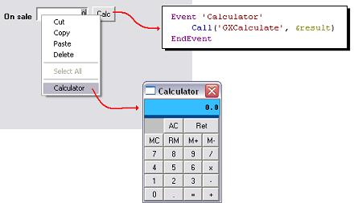

To invoke the windows calculator. SyntaxCall(‘GxCalculate’, Result) Type Returned: Where: Example1. From the Calculate button located on the Win Form, or... 2. Right-click on the numeric field and select Calculator option.  ScopeObjects: Procedures, Transactions, Work Panels See Also
|
| Backlinks |
| Common dialog functions |